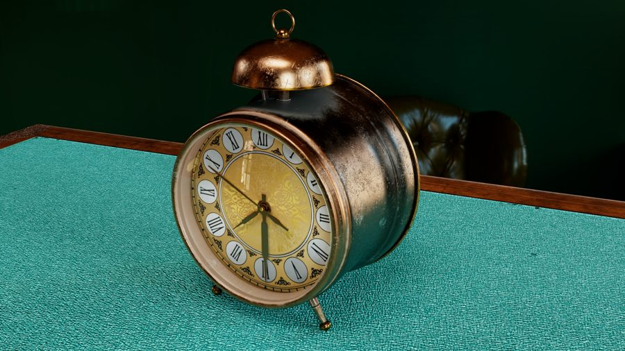
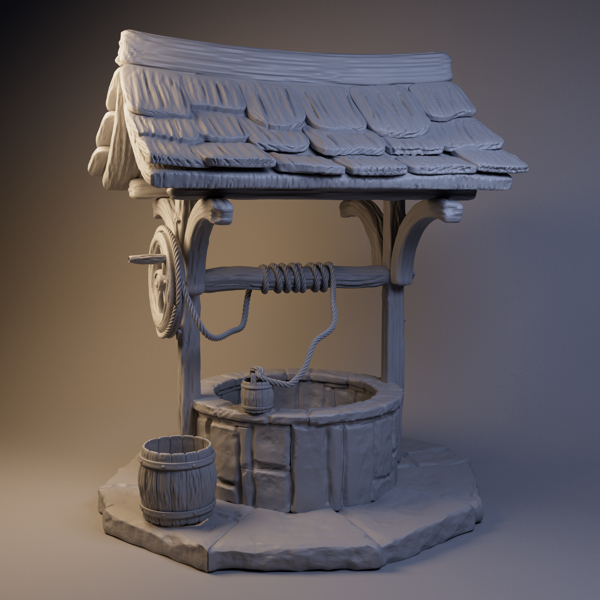
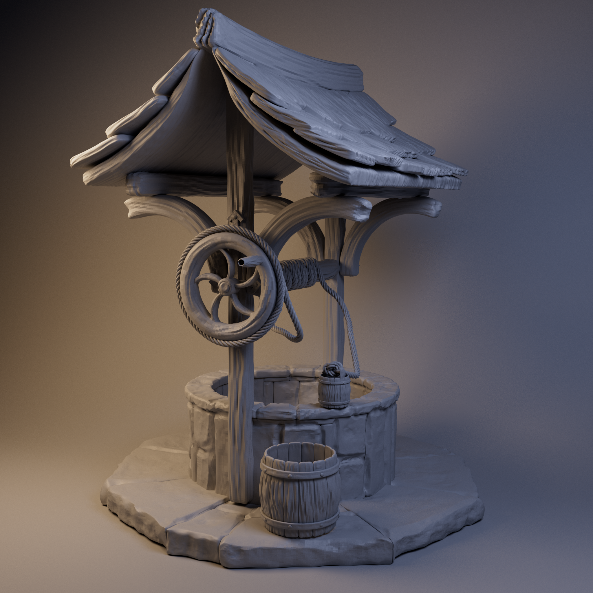
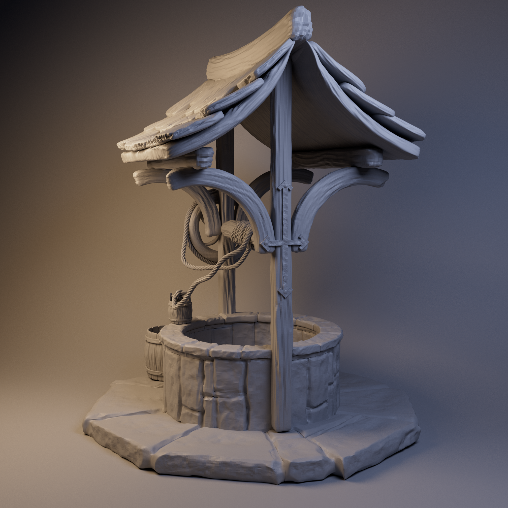
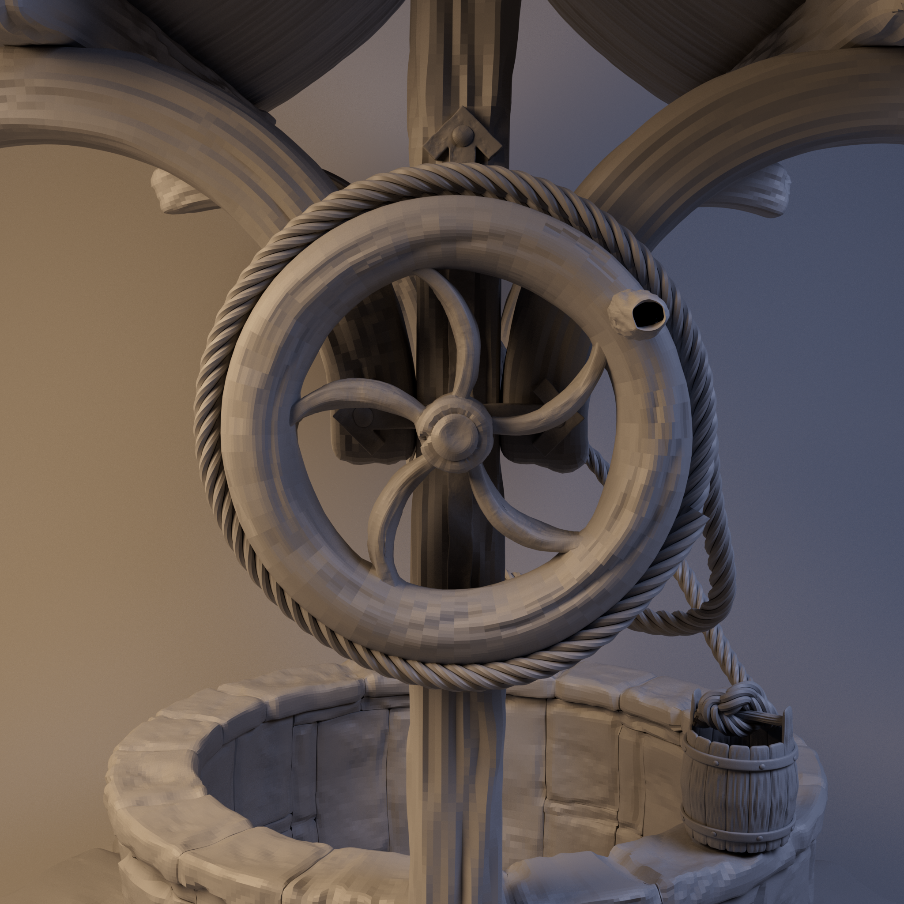

01 — ENVIRONMENT ART↗
01 — ENVIRONMENT ART↗
3D ARTIST · MOTION DESIGNER
Creating
worlds with
purpose.
From the first blockout to the final frame — I build visual experiences through 3D, atmosphere and motion.
↓01 / OBJECT STUDYALARM CLOCK · 3D
Time, texture
& detail.
& detail.
PORTFOLIOSCROLL TO EXPLORE ↓BASED IN THE UNITED STATES
A LITTLE ABOUT THE PRACTICE
I’m Parth — a 3D generalist drawn to rich environments, expressive characters and the small details that make a world feel real.
MORE ABOUT ME ↗01 / THE PORTFOLIO
Selected work
A selection of worlds, objects
and moments made in 3D.
01 — ENVIRONMENT ART↗

02 — HARD SURFACE / PROP↗
03 — PROP MODELING↗01 / ENVIRONMENT ART
Ancient
Temple
A cinematic environment study built around monumental architecture, intricate surface detail and atmospheric lighting. The scene explores composition, material response and the relationship between architecture and reflective water.
02 / HARD SURFACE & PROP
Alarm
Clock
A vintage-inspired object study focused on clean modeling, tactile materials and a considered final look. The project brings together form, surface treatment and product-style presentation.



03 / PROP MODELING
Ancient
Well
A stylized medieval-inspired prop exploring layered wood construction, stonework, rope details, roof shingles and pulley mechanics. Multiple views show the asset from different angles.
04 / CHARACTER ANIMATION
Fight
Sequence
A character performance centered on recovering after a heavy punch, with a fourth-wall moment that adds personality and comedic timing. The sequence focuses on weight, posing, body mechanics and readable acting choices.
05 / VEHICLE STUDY · WORK IN PROGRESS
Formula
One
A work-in-progress Formula 1 car modeled and rigged in Maya. The current focus is refining the model, developing materials and building a clean presentation for the vehicle.
02 / THE ARTIST
Craft meets
curiosity.
A generalist mindset.
A detail-oriented process.
I’m Parth Shah, a 3D artist and motion designer interested in building memorable visuals — from individual assets to complete worlds and animated moments.
My practice spans 3D modeling, environment art, character animation, texturing, lighting, rendering and compositing. I enjoy combining a strong visual idea with the technical craft needed to bring it to life.
I’m completing my Master’s in 3D Animation at DePaul University and exploring opportunities across games, animation, VFX, motion design and creative technology.
EXPLORE MY ARTSTATION ↗TOOLS OF THE TRADE
MayaBlenderZBrushSubstance PainterUnreal EngineArnoldRedshiftAfter EffectsPremiere ProPhotoshopIllustrator
03 / HAVE SOMETHING IN MIND?
LET’S MAKE IT REAL.Have a good
project?
Let’s talk ↗
Open to conversations about roles, projects and collaborations.